QT NEW 12-13
QT new 12
其他常见的控件一览
滚动条控件
我们可以在UI界面中找到滚动条控件——Scroll Widget，将大量的控件扔到里面之后，可以得到：
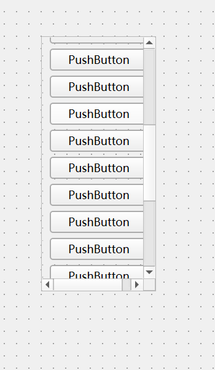
可以上下拖拽的那种！
ToolBox
回忆一下，我们的ToolBox，就跟QQ的好友栏一样的
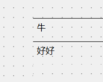
这里的Page1 和 Page2单击一下在属性栏的CurrrentPageName里更改就好了
Tab Widget
有点像网页那样的东西!
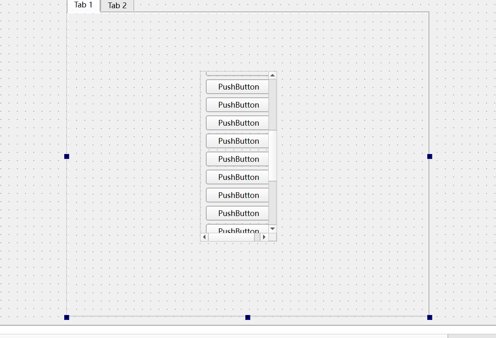
当然,我们切换就带上按钮就好了!,使用信号与槽即可
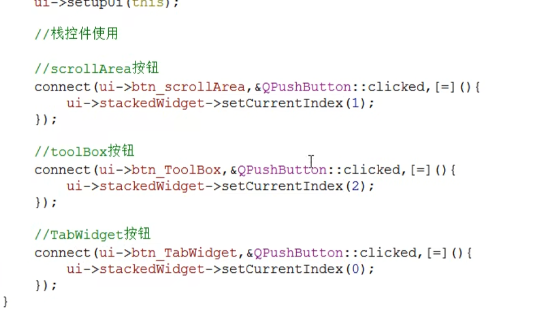
等等…
利用QLable显示图片
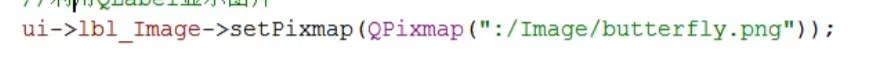
自定义控件
可以在工程中新建一个QT文件_自定义设计师类>默认的Widget类中!设计好空间之后返回主窗口的UI, 随后点击提升为(本质是换成子对象),将之提升为设计好的Widget的名称后点击提升,运行就可看到效果
点击全局提升，下一次直接提升为.
QT new 13
QEvent
下面我们自己写一个Lable，来学习自定义的事件这个模块。
首先，我们选择新建一个Widget：回忆下，就是在添加新文件下面——选择QWidget类型后include进来！
先不要着急include控件到UI界面下，我们修改几个地方：
#ifndef MYLABEL_H
#define MYLABEL_H
#include <QLabel>
class MyLabel : public QLabel // here
{
Q_OBJECT
public:
explicit MyLabel(QWidget *parent = nullptr);
void enterEvent(QEnterEvent*); // add this
void leaveEvent(QEvent*); //add this
signals:
};
#endif // MYLABEL_H#include "mylabel.h"
#include<QDebug>
MyLabel::MyLabel(QWidget *parent)
: QLabel{parent}
{
}
void MyLabel::enterEvent(QEnterEvent* event){
qDebug()<<"111";
}
void MyLabel::leaveEvent(QEvent*){
qDebug()<<"222";
}
然后在UI界面中添加Label控件，提升为MyLabel。现在：
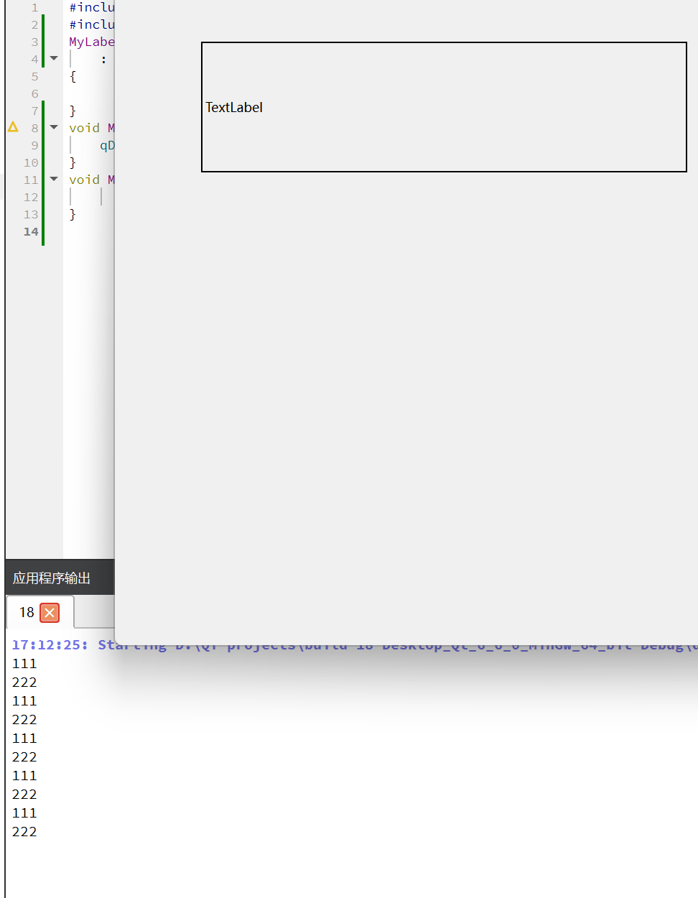
现在，进入正题——鼠标事件的改写。
我们添加如下的事件函数：
#ifndef MYLABEL_H
#define MYLABEL_H
#include <QLabel>
class MyLabel : public QLabel
{
Q_OBJECT
public:
explicit MyLabel(QWidget *parent = nullptr);
void enterEvent(QEnterEvent*);
void leaveEvent(QEvent*);
virtual void mousePressEvent(QMouseEvent* ev);
virtual void mouseReleaseEvent(QMouseEvent* ev);
virtual void mouseMoveEvent(QMouseEvent* ev);
signals:
};
#endif // MYLABEL_H#include "mylabel.h"
#include<QDebug>
MyLabel::MyLabel(QWidget *parent)
: QLabel{parent}
{
}
void MyLabel::enterEvent(QEnterEvent* event){
qDebug()<<"111";
}
void MyLabel::leaveEvent(QEvent*){
qDebug()<<"222";
}
void MyLabel::mousePressEvent(QMouseEvent* ev){
qDebug()<<"You press your mouse";
}
void MyLabel::mouseReleaseEvent(QMouseEvent* ev){
qDebug() << "yes, you depress the mouse";
}
void MyLabel::mouseMoveEvent(QMouseEvent* ev){
qDebug() << "yes, you move mouse";
}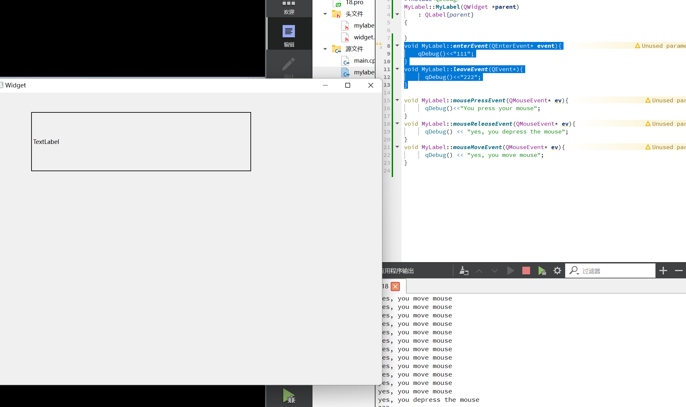
我们的ev实际上就返回了所有的信息：
#include "mylabel.h"
#include<QDebug>
#include<QMouseEvent>
MyLabel::MyLabel(QWidget *parent)
: QLabel{parent}
{
}
void MyLabel::enterEvent(QEnterEvent* event){
qDebug()<<"111";
}
void MyLabel::leaveEvent(QEvent*){
qDebug()<<"222";
}
void MyLabel::mousePressEvent(QMouseEvent* ev){
qDebug()<<"You press your mouse";
}
void MyLabel::mouseReleaseEvent(QMouseEvent* ev){
qDebug() << "yes, you depress the mouse";
}
void MyLabel::mouseMoveEvent(QMouseEvent* ev){
QString str = QString("yes, you move mouse x = %1 y = %2").arg(ev->x()).arg(ev->y()); // QString的格式化
qDebug() <<str;
}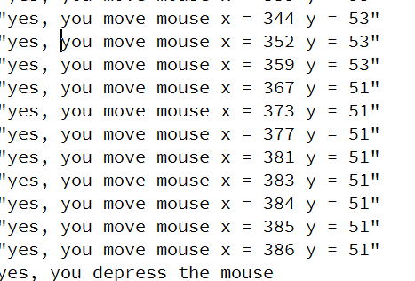
还有globle的，表明是相对于屏幕的为止！
如果是检测是不是：
void MyLabel::mouseMoveEvent(QMouseEvent* ev){
if(ev->button() == Qt::LeftButton){
QString str = QString("yes, you move mouse x = %1 y = %2").arg(ev->x()).arg(ev->y()); // QString的格式化
qDebug() <<str;
}
}Qt Event事件详解
传送门：https://www.jianshu.com/p/48f007c2de09
在与用户交互时发生。比如按下鼠标（mousePressEvent），敲击键盘（keyPressEvent）等。
系统自动发生，比如计时器事件（timerEvent）等。
在发生事件时（比如说上面说的按下鼠标），就会产生一个QEvent对象（这里是QMouseEvent，为QEvent的子类），这个QEvent对象会传给当前组件的event函数。如果当前组件没有安装事件过滤器（这个下文会提到），则会被event函数发放到相应的xxxEvent函数中（这里是mousePressEvent函数）。
Qt中所有的事件类都继承于QEvent类
这个QEvent对象会有各种各样的属性，这是由用户与界面交互时产生的。xxxEvent函数可以对其进行不同的处理（比如说是鼠标左键按下还是右键？）。查看帮助文档，可以看到QMouseEvent类有以下枚举。
在QtCreator中查看帮助文档
那么就可以在mousePressEvent中根据这个QEvent对象的这些枚举值来进行不同的处理，比如
class myLabel : public QLabel
{
protected:
void mousePressEvent(QMouseEvent *event);
};
void myLabel::mousePressEvent(QMouseEvent *event)
{
if(event->Buttons == LeftButton)
{
//do sth
}
else if(event->Buttons == RightButton)
{
//do sth
}
} 可以看到，我们首先需要先创建一个自己的QLabel类，并继承于Qt的QLabel类，然后并重写相应的xxxEvent函数（这些事件处理函数都是虚函数）。
Qt程序的main函数中需要创建一个QApplication对象，然后调用exec函数。这将令程序进入一个死循环，并不断监听应用程序的事件，发生事件时就生成一个QEvent对象。这又称为事件循环。
#include <QApplication>
#include "mainwindow.h"
int main(int argc, char *argv[])
{
QApplication app(argc, argv);
MainWindow window;
window.show();
return app.exec();
}二、事件的分发：event函数
上面提到的xxxEvent函数，称为事件处理器（event handler）。而event函数的作用就在于事件的分发。如果想在事件的分发之前就进行一些操作，比如监听某个按键的按下。
bool myWidget::event(QEvent *e)
{
if (e->type() == QEvent::KeyPress)
{
//将QEvent对象转换为真正的QKeyEvent对象
QKeyEvent *keyEvent = static_cast<QKeyEvent *>(e);
if (keyEvent->key() == Qt::Key_Tab)
{
qDebug() << "You press tab.";
return true;
}
}
//按照原来的流程来进行事件的分发
return QWidget::event(e);
} 在上面的程序中，myWidget是QWidget的子类。同样的，它的event函数是一个虚函数，带有一个QEvent类型的参数。当系统产生QEvent对象时，就会传入这个函数并调用。函数的返回值是bool类型，返回值不同有不同的意义。
如果传入的事件已被识别并且处理，则需要返回 true，否则返回 false。如果返回值是 true，那么 Qt 会认为这个事件已经处理完毕，不会再将这个事件发送给其它对象，而是会继续处理事件队列中的下一事件。
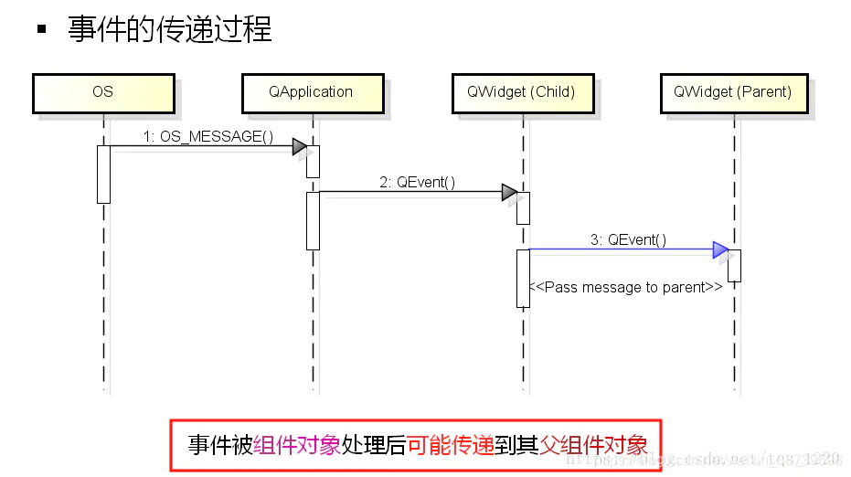
Qt系统在处理事件时，有一种机制叫事件传播机制。也就是说，在子组件（比如说一个QButton）中发生的事件，调用了子组件的event函数之后，还会调用父组件（比如说QWidget）的event函数。event函数的返回值就用于控制这样的一个过程。
需要注意的是，重写event函数之后最好返回父类的event函数来处理其他的事件分发，不然就只能处理自己定义的事件。
bool myTextEdit::event(QEvent *e)
{
if (e->type() == QEvent::KeyPress)
{
//将QEvent对象转换为真正的QKeyEvent对象
QKeyEvent *keyEvent = static_cast<QKeyEvent *>(e);
if (keyEvent->key() == Qt::Key_Tab)
{
qDebug() << "You press tab.";
return true;
}
}
//直接返回false
return false;
} 在这个例子中，因为没有调用父类QTextEdit的event函数，所以只能处理Tab的情况，你再按其他按键就啥反应都没有了。同样，事件也不能进行传播。
三、事件过滤器（Even Filter）
某些应用场景下，需要拦截某个组件发生的事件，让这个事件不再向其他组件进行传播，这时候可以为这个组件或其父组件安装一个事件过滤器（evenFilter）。
QObject有一个虚函数，原型如下
virtual bool QObject::eventFilter ( QObject * watched, QEvent * event ); 可以看到，函数有两个参数，一个为具体发生事件的组件，一个为发生的事件（产生的QEvent对象）。当事件是我们感兴趣的类型，可以就地进行处理，并令其不再转发给其他组件。函数的返回值也是bool类型，作用跟even函数类似，返回true为不再转发，false则让其继续被处理。
实际使用中，我们需要对QObject组件调用installEvenFilter函数，即为组件安装过滤器，才能使用事件过滤器这个机制。这样，该组件及其子组件的事件就会被监听。这个机制的好处在于不用像重写QEvent和xxxEvent函数一样需要继承Qt的内置类。
void QObject::installEventFilter ( QObject * filterObj ); 下面举一个例子。MainWindow中有一个QTextEdit控件，我们拦截它的键盘按下的事件。这样处理之后，会在输出窗口打印出按下的键位，但不会在控件上显示。这表明事件已被拦截，不会去调用even函数。
class MainWindow : public QMainWindow
{
public:
MainWindow();
protected:
bool eventFilter(QObject *obj, QEvent *event);
private:
QTextEdit *textEdit;
};
MainWindow::MainWindow()
{
textEdit = new QTextEdit;
setCentralWidget(textEdit);
textEdit->installEventFilter(this);
}
bool MainWindow::eventFilter(QObject *obj, QEvent *event)
{
if (obj == textEdit)
{
if (event->type() == QEvent::KeyPress)
{
QKeyEvent *keyEvent = static_cast<QKeyEvent *>(event);
qDebug() << "you press" << keyEvent->key();
//事件不再进行传播，拦截
return true;
}
else
{
return false;//继续传播
}
}
else
{
//当不确定是否继续传播时，按照父类的方法来处理
//即调用父类的evenFilter函数
return QMainWindow::eventFilter(obj, event);
}
}同样的，even函数能干的事情，evenFilter也能干。比如说上面的处理键盘按下Tab键。
bool myObject::eventFilter(QObject *object, QEvent *event)
{
if (object == target && event->type() == QEvent::KeyPress)
{
QKeyEvent *keyEvent = static_cast<QKeyEvent *>(event);
if (keyEvent->key() == Qt::Key_Tab)
{
qDebug() << "You press tab.";
//拦截
return true;
}
else
{
//不进行拦截
return false;
}
}
//不进行拦截
return false;
} 我们可以对QApplication或者QCoreApplication对象添加事件过滤器。这种全局的事件过滤器将会在所有其它特性对象的事件过滤器之前调用。这种行为会严重降低整个应用程序的事件分发效率，要看具体情况使用。
事件过滤器和被安装过滤器的组件必须在同一线程，否则，过滤器将不起作用。另外，如果在安装过滤器之后，这两个组件到了不同的线程，那么，只有等到二者重新回到同一线程的时候过滤器才会有效。
四、总结
Qt中使用事件机制，每一种事件对应一个事件处理器，比如：
- mouseEvent()
- keyPressEvent()
- etc…
发生事件时会生成一个QEvent对象，则需要even函数进行分发，来调用相应的事件处理器
switch (event->type())
{
case QEvent::MouseMove:
mouseMoveEvent((QMouseEvent*)event);
break;
// ...
} 事件过滤器（evenFilter）可以令事件进行拦截，阻止其传播，从而实现某些功能。
另外，有一种一般很少使用的方法，即去重写这么一个函数
virtual bool QCoreApplication::notify ( QObject * receiver, QEvent * event );该函数原实现相当于让组件调用even函数，即receiver->event(event)。这相当于全局的事件过滤器，且不会受到多线程的限制。
那么，在使用Qt的事件机制时，应该按照以下思路进行
- 重写paintEvent、mousePressEvent等事件处理函数。这是最普通、最简单的形式，同时功能也最简单。
- 重写event函数。event函数是所有对象的事件入口，QObject和QWidget中的实现，默认是把事件传递给特定的事件处理函数。
- 在特定对象上面安装事件过滤器。该过滤器仅过滤该对象接收到的事件。
- 在QCoreApplication::instance()上面安装事件过滤器。该过滤器将过滤所有对象的所有事件，但会有多线程问题。
- 重写QCoreApplication::notify()函数。这是最强大的，和全局事件过滤器一样提供完全控制，并且不受线程的限制。
鼠标事件（QMouseEvent）
传送门：https://blog.csdn.net/qq_44386034/article/details/125637737
常用的鼠标事件：(本篇处理事件用的是方法一：重写鼠标事件)
void mousePressEvent(QMouseEvent *event); //单击
void mouseReleaseEvent(QMouseEvent *event); //释放
void mouseDoubleClickEvent(QMouseEvent *event); //双击
void mouseMoveEvent(QMouseEvent *event); //移动
void wheelEvent(QWheelEvent *event); //滑轮 鼠标事件使用的时候，加头文件：
#include <QMouseEvent>重写事件框架：
鼠标按下事件
void Widget::mousePressEvent(QMouseEvent *event)
{
// 如果是鼠标左键按下
if(event->button() == Qt::LeftButton){
···
}
// 如果是鼠标右键按下
else if(event->button() == Qt::RightButton){
···
}
}
鼠标移动事件
void Widget::mouseMoveEvent(QMouseEvent *event)
{
// 这里必须使用buttons()
if(event->buttons() & Qt::LeftButton){ //进行的按位与
···
}
} 默认情况下，触发事件需要点击一下，才能触发。可设置为自动触发:
setMouseTracking(true); 鼠标释放事件
void Widget::mouseReleaseEvent(QMouseEvent *event)
{
···
}
鼠标双击事件
void Widget::mouseDoubleClickEvent(QMouseEvent *event)
{
// 如果是鼠标左键按下
if(event->button() == Qt::LeftButton){
···
}
}
滚轮事件
void Widget::wheelEvent(QWheelEvent *event)
{
// 当滚轮远离使用者时
if(event->delta() > 0){
···
}else{//当滚轮向使用者方向旋转时
···
}
}实例演示(在label控件中，移动鼠标获取实时位置，并显示在界面上)
创建mylabel类，基类设置为QLabel 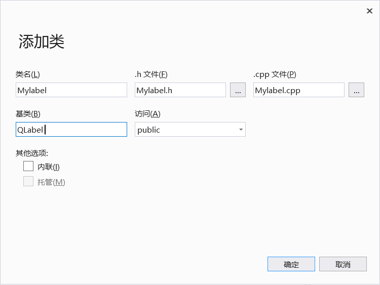
这里用了类似自定义控件的方法，对Mylabel类进行封装。设置基类QLabel 是为了在ui界面中提升label控件(即将label控件和Mylabel关联，提升时候必须二者基类相同)
在mylabel.h中声明鼠标事件
#pragma once
#include <qlabel.h>
class mylabel : public QLabel
{
public:
mylabel(QWidget* parent = 0);
~mylabel();
public:
//鼠标移动事件
void mouseMoveEvent(QMouseEvent* event);
//鼠标按下事件
void mousePressEvent(QMouseEvent* event);
//鼠标释放事件
void mouseReleaseEvent(QMouseEvent* event);
};
在mylabel.cpp中重写事件
#include "mylabel.h"
#include"QMouseEvent"
mylabel::mylabel(QWidget* parent) :QLabel(parent)
{
}
mylabel::~mylabel()
{
}
//鼠标移动显示坐标
void mylabel::mouseMoveEvent(QMouseEvent* event)
{
if (event->buttons() & Qt::LeftButton) //进行的按位与(只有左键点击移动才满足)
{
QString str = QString("Move:(X:%1,Y:%2)").arg(event->x()).arg(event->y());
this->setText(str);
}
}
//鼠标按下显示“ok，mouse is press”
void mylabel::mousePressEvent(QMouseEvent* event)
{
setText("Ok, mouse is press");
}
//鼠标释放清除显示
void mylabel::mouseReleaseEvent(QMouseEvent* event)
{
setText(" ");
}在主函数(QTest.cpp)中声明mylabel的类对象(即声明一个mylabel类的label控件)
#include "qtest.h"
QTest::QTest(QWidget *parent)
: QWidget(parent)
{
ui.setupUi(this);
//声明mylabel类的控件
mylabel* label1 = new mylabel(this);
label1->setGeometry(QRect(130, 100, 271, 161));
//设置边框
label1->setFrameShape(QFrame::Panel);
} 
另外，当调用setMouseTracking(true);时(即设置鼠标状态为自动触发)，需要将鼠标移动事件的if语句去掉(因为不需要点击触发了)
修改maylabel.cpp事件：
#include "mylabel.h"
#include"QMouseEvent"
mylabel::mylabel(QWidget* parent) :QLabel(parent)
{
//设置鼠标状态(自动触发)
setMouseTracking(true);
}
mylabel::~mylabel()
{
}
//鼠标移动显示坐标
void mylabel::mouseMoveEvent(QMouseEvent* event)
{
QString str = QString("Move:(X:%1,Y:%2)").arg(event->x()).arg(event->y());
this->setText(str);
}
//鼠标按下显示“ok，mouse is press”
void mylabel::mousePressEvent(QMouseEvent* event)
{
setText("Ok, mouse is press");
}
//鼠标释放清除显示
void mylabel::mouseReleaseEvent(QMouseEvent* event)
{
setText(" ");
}效果展示：
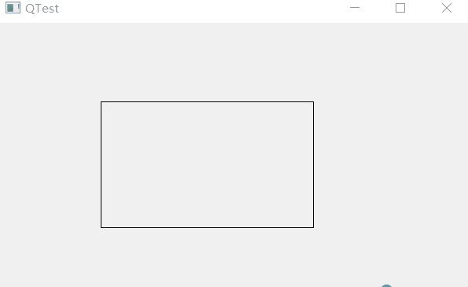
这里用的是代码创建label控件，那么能不能用ui界面编辑然后在对label控件提升呢？
答案是可以的，但是需要注意的是：此处不能选择全局包含
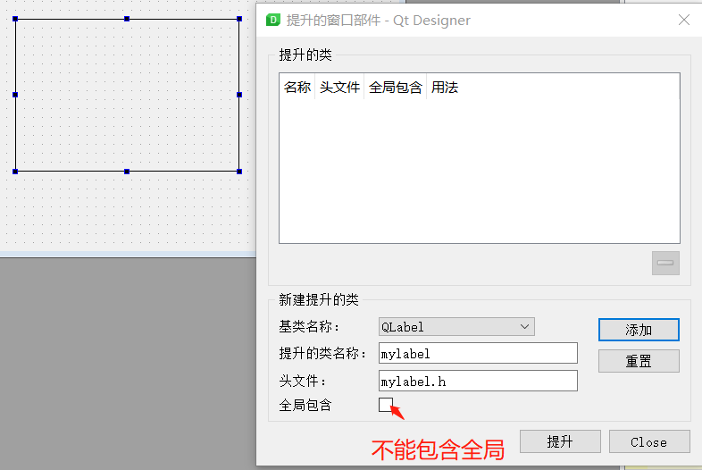
否则会出现：
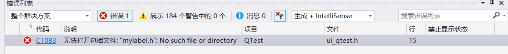
我想其中的原因主要是因为：
本实例是新建了一个mylabel类，而不是像QT常用控件(三)——自定义控件封装 - 唯有自己强大 - 博客园 (cnblogs.com)这篇博文中直接新添加了一个设计师界面类(即包含ui .h .cpp)。当选择全局包含时，就包含了主类。
其实也有解决的办法：需要在提升界面的头文件处，将工程目录下自定义控件的地址放于此处(本篇地址：C:/Users/WFD/Desktop/QTest/QTest/mylabel.h)
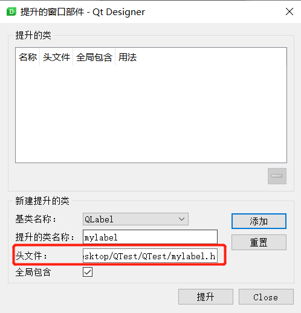
二，事件的分发：event函数
上面提到的xxxEvent函数，称为事件处理器(event handler)。而event函数的作用就在于事件的分发。如果想在事件的分发之前就进行一些操作，比如监听(阻塞)鼠标按下事件。
如果希望在事件分发之前做一些操作，就可以重写这个 event()函数了。比如我们希望阻塞鼠标按下事件，那么我们就在新建的Mylabel类中重写event()函数(该类的父类是QLabel)
在Mylabel.h中声明event事件
#include"qlabel.h"
class Mylabel : public QLabel
{
public:
explicit Mylabel(QWidget* parent = 0);
//鼠标按下事件
void mousePressEvent(QMouseEvent* event);
//鼠标释放事件
void mouseReleaseEvent(QMouseEvent* event);
//声明event事件
bool event(QEvent* e);
};
在Mylabel.cpp中重写event事件。
#include "Mylabel.h"
#include"QMouseEvent"
Mylabel::Mylabel(QWidget* parent) :QLabel(parent)
{
}
//重写鼠标按下事件
void Mylabel::mousePressEvent(QMouseEvent* event)
{
this->setText(QString("mouse is press x:%1,y:%2").arg(event->x()).arg(event->y()));
}
//重写鼠标释放事件
void Mylabel::mouseReleaseEvent(QMouseEvent* event)
{
this->setText("mouse is release ");
}
//重写event事件
bool Mylabel::event(QEvent* e)
{
//如果鼠标按下，再事件分发中做拦截
if (e->type()==QEvent::MouseButtonPress)
{
//静态转换(将QEvent的对象转换为QMouseEvent对象)
QMouseEvent* event = static_cast<QMouseEvent*>(e);
this->setText(QString("event mouse is press x:%1,y:%2").arg(event->x()).arg(event->y()));
return true;//返回ture，说明用户自己处理事件，不往下分发(即拦截上面的按下事件)
}
return QLabel::event(e);
}
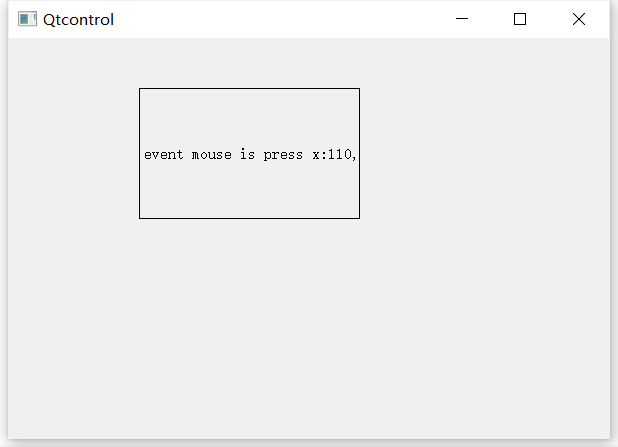
点击鼠标可以看到，触发的是event的事件(即阻塞了mousePressEvent的事件)。特别需要注意的是：在将不需要阻塞分发的时候，需要分发给父类的event函数处理。即(return QLable::event(e)；)
由此可以见，event()是一个集中处理不同类型的事件的地方。如果你不想重写一大堆事件处理器，就可以重写这个 event()函数，通过 QEvent::type()判断不同的事件。鉴于重写 event()函数需要十分小心注意父类的同名函数的调用，一不留神就可能出现问题，所以一般还是建议只重写事件处理器(当然，也必须记得是不是应该调用父类的同名处理器)。
三，事件过滤器(Even Filter)
某些应用场景下，需要拦截某个组件发生的事件，让这个事件不再向其他组件进行传播，这时候可以为这个组件或其父组件安装一个事件过滤器，该过滤器在event分发之前进行拦截。
事件的过滤有两个步骤：
对QObject组件安装过滤器(调用installEvenFilter函数)
void QObject::installEventFilter ( QObject * filterObj ); 参数filterobj 是指谁为组件安装过滤器(一般是父类)
这个函数接受一个 QObject *类型的参数。记得刚刚我们说的，eventFilter()函数是 QObject 的一个成员函数，因此，任意 QObject 都可以作为事件过滤器(问题在于，如果你没有重写 eventFilter()函数，这个事件过滤器是没有任何作用的，因为默认什么都不会过滤)。已经存在的过滤器则可以通过QObject::removeEventFilter()函数移除。
我们可以向一个对象上面安装多个事件处理器 ，只要调用多次installEventFilter()函数。如果一个对象存在多个事件过滤器，那么，最后一个安装的会第一个执行，也就是后进先执行的顺序。
事件过滤器的重写(evenFilter函数)
virtual bool QObject::eventFilter ( QObject * watched, QEvent * event ); 可以看到，函数有两个参数，一个为具体发生事件的组件，一个为发生的事件(产生的QEvent对象)。当事件是我们感兴趣的类型，可以就地进行处理，并令其不再转发给其他组件。函数的返回值也是bool类型，作用跟even函数类似，返回true为不再转发，false则让其继续被处理。
实例：通过事件过滤器阻塞上面代码中的鼠标按下事件
#include "qtest.h"
#include"qmouseevent"
QTest::QTest(QWidget *parent)
: QWidget(parent)
{
ui.setupUi(this);
//第一步：给label添加过滤器
ui.label->installEventFilter(this);
}
//第二步：重写过滤事件
bool QTest::eventFilter(QObject* obj, QEvent* e)
{
if (obj == ui.label)
{
//如果鼠标按下，再事件分发中做拦截
if (e->type() == QEvent::MouseButtonPress)
{
QMouseEvent* event = static_cast<QMouseEvent*>(e);
ui.label->setText(QString("eventfilter mouse is press x:%1,y:%2").arg(event->x()).arg(event->y()));
return true;//返回ture，说明用户自己处理事件，不往下分发(即拦截上面的按下事件)
}
}
return QWidget::eventFilter(obj, e);
}
//重写鼠标按下事件
void QTest::mousePressEvent(QMouseEvent* event)
{
ui.label->setText(QString("mouse is press x:%1,y:%2").arg(event->x()).arg(event->y()));
}
//重写事件分发
bool QTest::event(QEvent* e)
{
//如果鼠标按下，再事件分发中做拦截
if (e->type() == QEvent::MouseButtonPress)
{
QMouseEvent* event = static_cast<QMouseEvent*>(e);
ui.label->setText(QString("event mouse is press x:%1,y:%2").arg(event->x()).arg(event->y()));
return true;//返回ture，说明用户自己处理事件，不往下分发(即拦截上面的按下事件)
}
return QWidget::event(e);
}运行结果：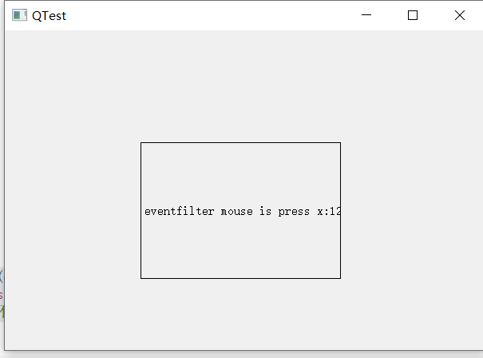
可以看到在过滤器事件中就监听了鼠标按压(即阻塞了后面的事件分发和鼠标按压)